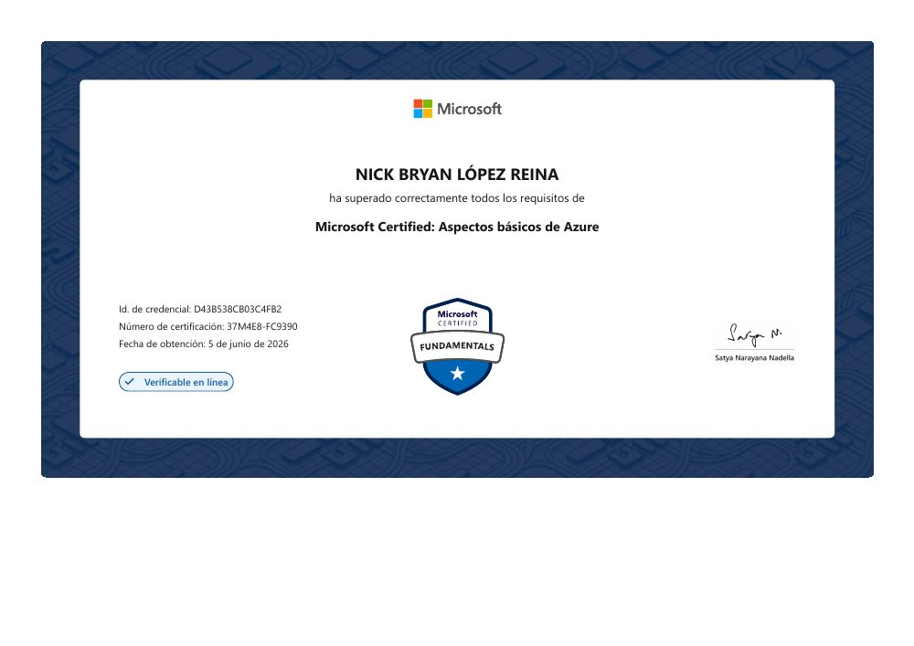
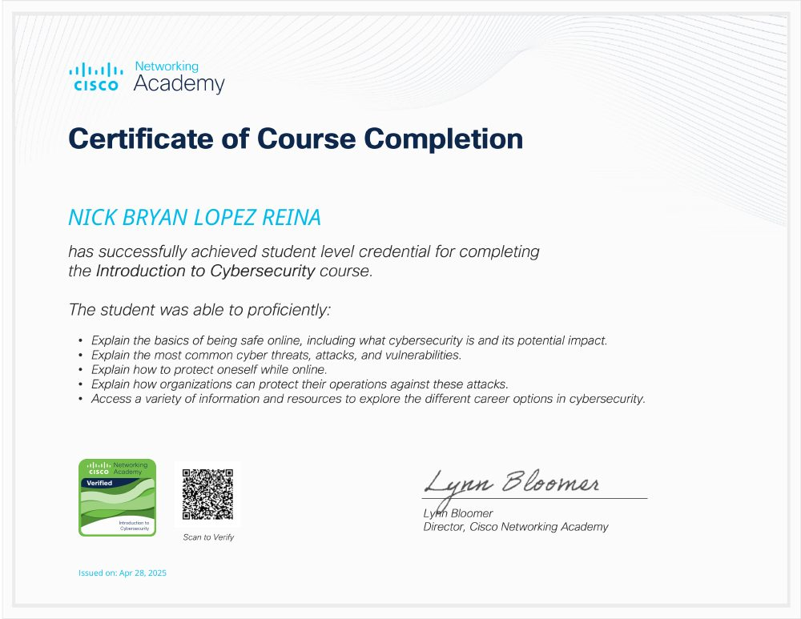
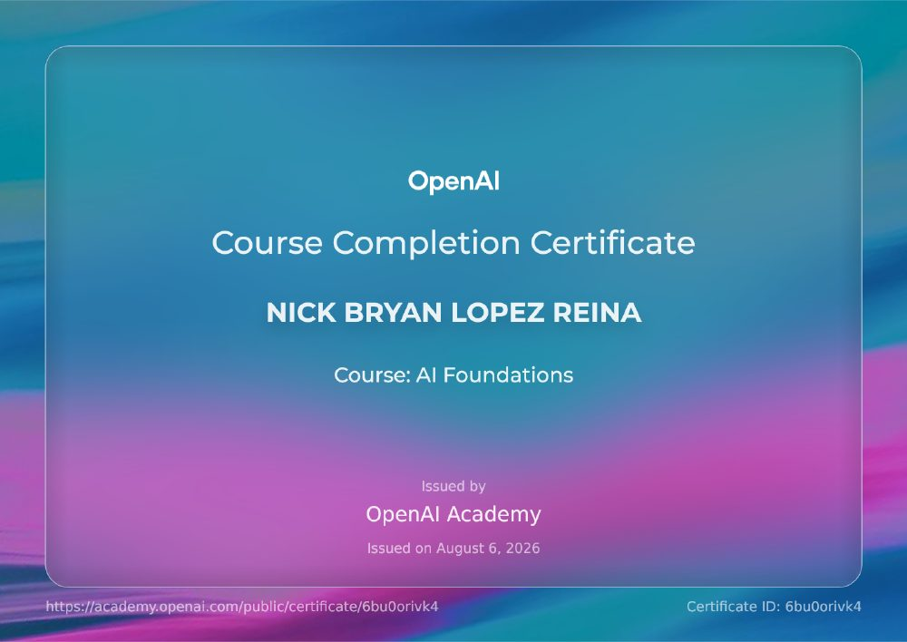
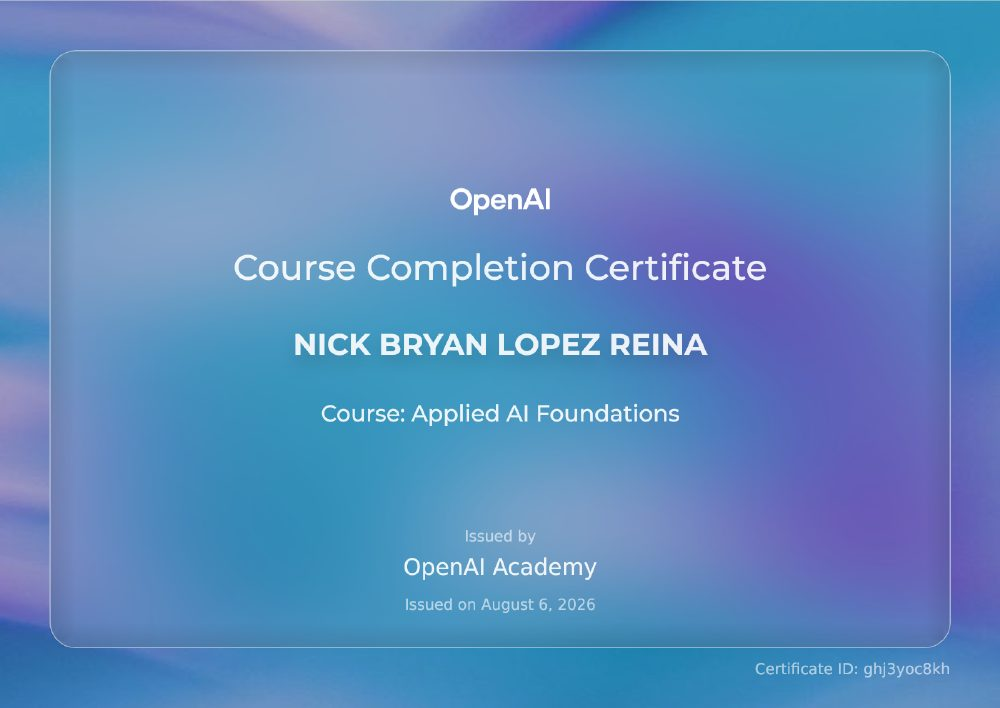
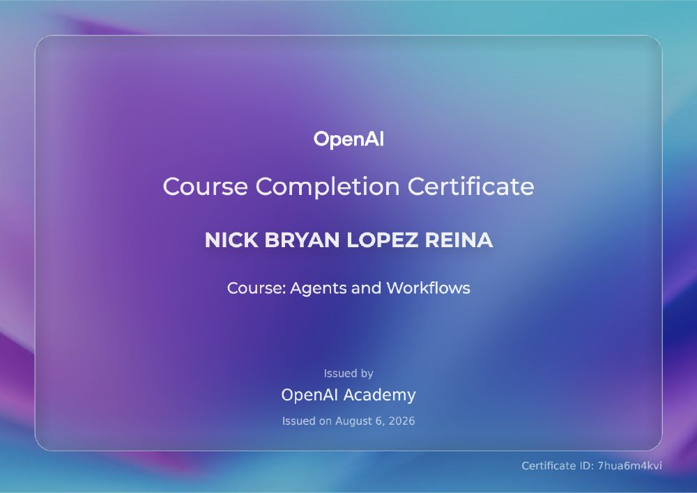
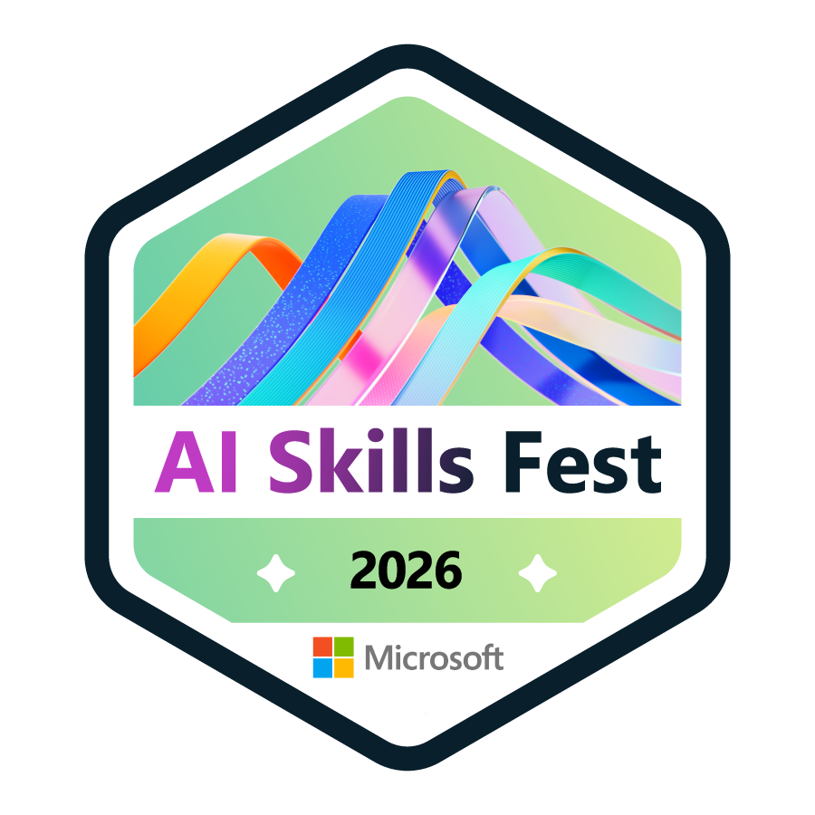
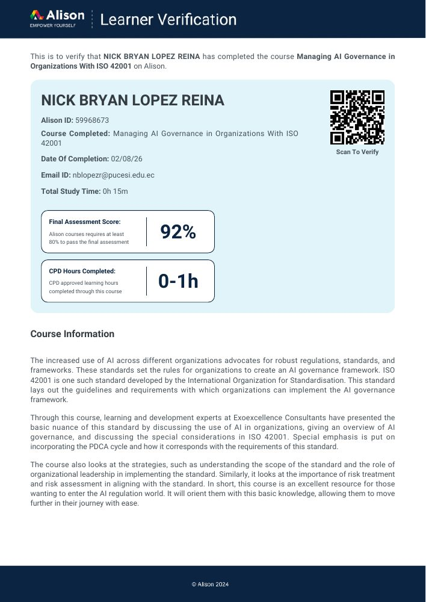
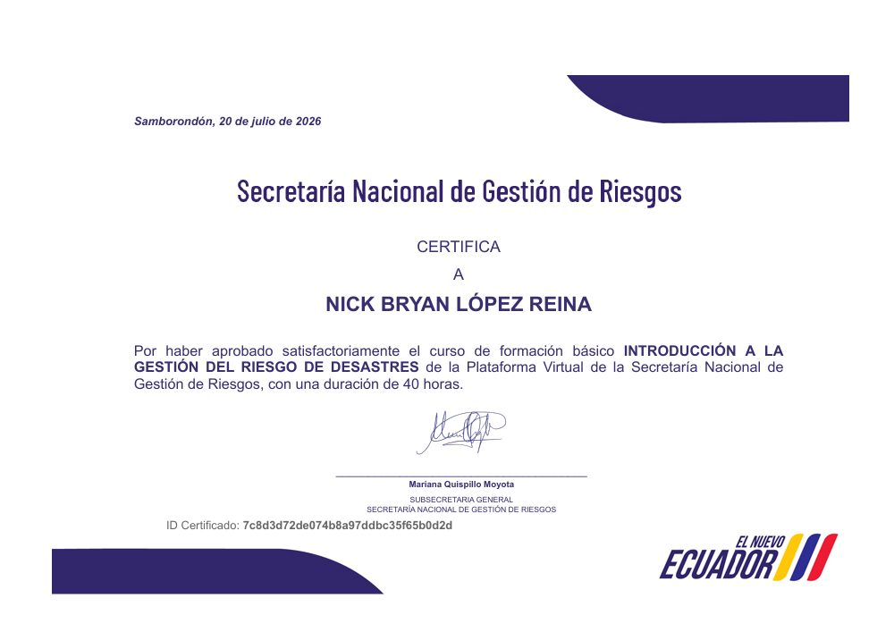
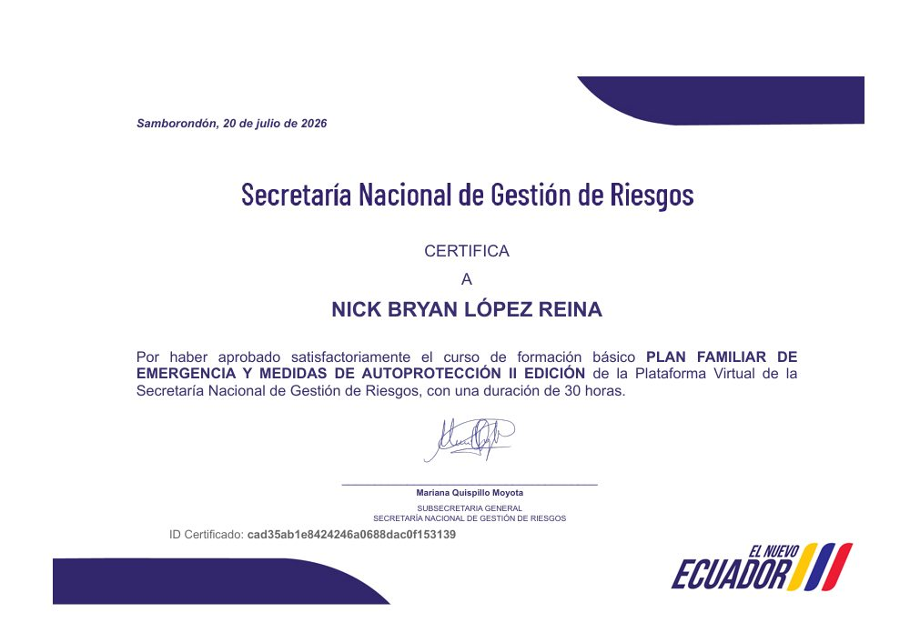
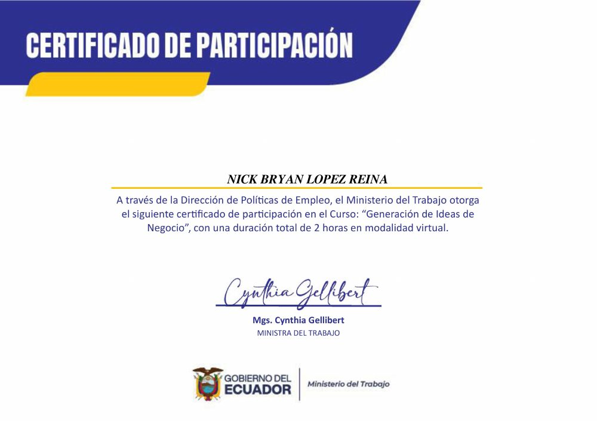

Arquitectura
Código modular, APIs claras y decisiones técnicas documentadas.
Software Engineer Portfolio
Ingeniero en Tecnologías de la Información
Diseño y desarrollo soluciones de software modernas, seguras y escalables, con especial interés en backend, sistemas Full-Stack e inteligencia artificial aplicada con LLM y RAG.

01 / Sobre mí
Trabajo en la creación de soluciones tecnológicas completas: desde la arquitectura y el diseño de APIs hasta la experiencia de usuario.
Cada decisión busca equilibrar funcionalidad, seguridad, calidad y mantenibilidad. Me interesa construir sistemas que resuelvan problemas concretos, sean comprensibles para otros equipos y puedan evolucionar con claridad.
Código modular, APIs claras y decisiones técnicas documentadas.
Autenticación, control de acceso, validación y defensa por capas.
LLM, RAG y automatización orientados a problemas concretos.
02 / Tecnologías
Un stack orientado a producto, APIs, datos, inteligencia artificial y seguridad.
03 / Proyectos destacados
Chatbot académico inteligente que permite consultas institucionales públicas mediante RAG y consultas académicas personalizadas para estudiantes autenticados.
Tecnologías
Aplicación web orientada a actividades ecológicas. Permite registrar acciones, gestionar solicitudes, validar códigos QR, manejar puntos y administrar beneficios o recompensas.
Ver repositorioTecnologías
Plataforma experimental multi-organización orientada al procesamiento de eventos tecnológicos, alertas, incidentes, seguridad, observabilidad y sistemas de IA/RAG.
Ver repositorioTecnologías
04 / Experiencia
Secretaría Nacional de Gestión de Riesgos · jul. 2026 — actualidad · jornada parcial · híbrido
Análisis, procesamiento y validación de información para apoyar decisiones administrativas. Elaboración de reportes e indicadores, depuración de datos, seguimiento de procesos y optimización del manejo de información, colaborando con equipos multidisciplinarios para asegurar su calidad, integridad y disponibilidad.
Proyectos independientes
Diseño y construcción de aplicaciones web, APIs, soluciones Full-Stack e integración de componentes de inteligencia artificial, priorizando mantenibilidad, seguridad y experiencia de usuario.
UboraTech · oct. 2024 — feb. 2025 · prácticas preprofesionales · presencial
Trabajo enfocado en backend, consumo de APIs y construcción de funcionalidades para una plataforma web empresarial de control de pagos.
05 / Formación
Formación académica
Pontificia Universidad Católica del Ecuador — Sede Ibarra
Formación universitaria
Título registrado
Unidad Educativa Fiscomisional PCEI Monseñor Leónidas Proaño · 23 de febrero de 2021
Registro oficial verificado
Credenciales verificadas
Explora 11 documentos y una insignia. Usa las flechas, desliza horizontalmente o navega con el teclado.

Ver certificado ↗
Ver certificado ↗
Ver certificado ↗
Ver certificado ↗
Ver certificado ↗
Ver insignia ↗
Ver certificado ↗
Ver certificado ↗
Ver certificado ↗
Ver certificado ↗Marcos y estándares estudiados: ITIL, COBIT, ISO/IEC 27001, ISO/IEC 42001 y fundamentos de gestión de servicios, gobierno, seguridad de la información y gobernanza de inteligencia artificial.
06 / Contacto
Conversemos sobre desarrollo de software, arquitectura, Backend, Full-Stack o inteligencia artificial aplicada.